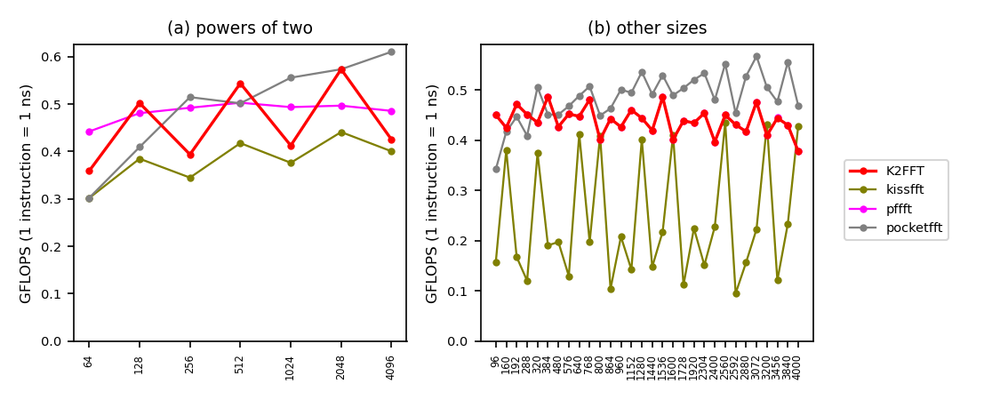

QEMU esp32
, L1d cache 96 KiB (2 instances), L2 cache 2.5 MiB (2 instances), L3 cache 48 MiB (1 instance), 4 CPUs
, a VM on Microsoft
.
Linux afa849b0eac8 7.0.0-1017-azure #17~24.04.1-Ubuntu SMP PREEMPT Thu Sep 24 18:46:57 UTC 2026 x86_64 x86_64 x86_64 GNU/Linux
Emulated: qemu-system-xtensa -M esp32
Rounds: 1.
Compilers and flags (unless overridden):
Checks: passed. K2FFT: beaten at 18 of 37, by pocketfft 17 pffft 3.
new: esp32-qemu_esp32 has no baseline
QEMU instruction counts, one round: codes no rival beat by more than 15%:
| n | no rival beat these, fastest first | K2FFT beaten by |
|---|---|---|
| 64 | pffft | pffft |
| 72 | pocketfft | |
| 80 | kissfft pocketfft | |
| 90 | pocketfft | |
| 96 | pffft | |
| 100 | kissfft pocketfft | |
| 108 | pocketfft | |
| 120 | pocketfft | |
| 128 | pffft | |
| 144 | pocketfft | |
| 150 | pocketfft | |
| 160 | pffft pocketfft kissfft | |
| 162 | pocketfft | |
| 180 | pocketfft | |
| 192 | pffft pocketfft | |
| 200 | pocketfft kissfft | |
| 216 | pocketfft | |
| 240 | pocketfft | |
| 250 | kissfft pocketfft | |
| 256 | pocketfft pffft | pffft pocketfft |
| 270 | pocketfft | |
| 288 | pffft pocketfft | |
| 300 | pocketfft | |
| 320 | pocketfft | pocketfft |
| 324 | pocketfft | |
| 360 | pocketfft | |
| 384 | pffft pocketfft | |
| 400 | pocketfft | |
| 432 | pocketfft | |
| 450 | pocketfft | |
| 480 | pocketfft pffft | |
| 486 | pocketfft | |
| 500 | pocketfft kissfft | |
| 512 | pffft pocketfft | |
| 540 | pocketfft | |
| 576 | pocketfft pffft | |
| 600 | pocketfft | |
| 640 | pocketfft pffft | |
| 648 | pocketfft | |
| 720 | pocketfft | |
| 750 | pocketfft | |
| 768 | pocketfft pffft | |
| 800 | pocketfft kissfft pffft | |
| 810 | pocketfft | |
| 864 | pocketfft pffft | |
| 900 | pocketfft | |
| 960 | pocketfft | pocketfft |
| 972 | pocketfft | |
| 1000 | pocketfft kissfft | |
| 1024 | pocketfft pffft | pffft pocketfft |
| 1080 | pocketfft | |
| 1152 | pocketfft pffft | |
| 1200 | pocketfft | |
| 1250 | kissfft pocketfft | |
| 1280 | pocketfft | pocketfft |
| 1296 | pocketfft | |
| 1350 | pocketfft | |
| 1440 | pocketfft | pocketfft |
| 1458 | pocketfft | |
| 1500 | pocketfft | |
| 1536 | pocketfft pffft | |
| 1600 | pocketfft | pocketfft |
| 1620 | pocketfft | |
| 1728 | pocketfft pffft | |
| 1800 | pocketfft | |
| 1920 | pocketfft | pocketfft |
| 1944 | pocketfft | |
| 2000 | pocketfft kissfft | |
| 2048 | pocketfft | |
| 2160 | pocketfft | |
| 2250 | pocketfft | |
| 2304 | pocketfft | pocketfft |
| 2400 | pocketfft | pocketfft |
| 2430 | pocketfft | |
| 2500 | pocketfft kissfft | |
| 2560 | pocketfft | pocketfft |
| 2592 | pocketfft pffft | |
| 2700 | pocketfft | |
| 2880 | pocketfft | pocketfft |
| 2916 | pocketfft | |
| 3000 | pocketfft | |
| 3072 | pocketfft | pocketfft |
| 3200 | pocketfft | pocketfft |
| 3240 | pocketfft | |
| 3456 | pocketfft pffft | |
| 3600 | pocketfft | |
| 3750 | pocketfft | |
| 3840 | pocketfft | pocketfft |
| 3888 | pocketfft | |
| 4000 | pocketfft kissfft | pocketfft |
| 4050 | pocketfft | |
| 4096 | pocketfft | pocketfft |
Raw data files: esp32-qemu_esp32.counts.speed esp32-qemu_esp32.counts.tbl esp32-qemu_esp32.info esp32-qemu_esp32.sysinfo esp32-qemu_esp32.ctest esp32-qemu_esp32.verdicts esp32-qemu_esp32.fastest